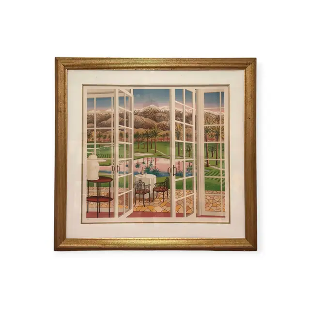
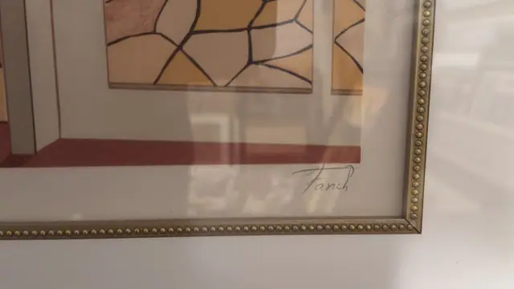
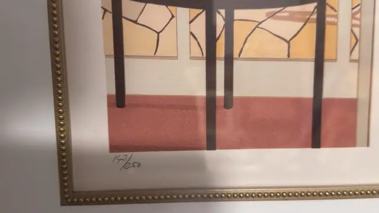
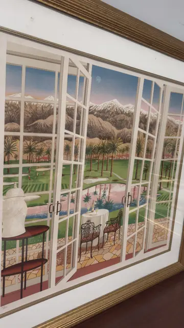
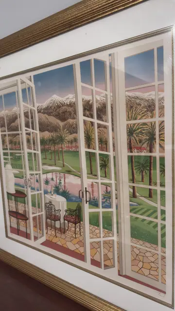
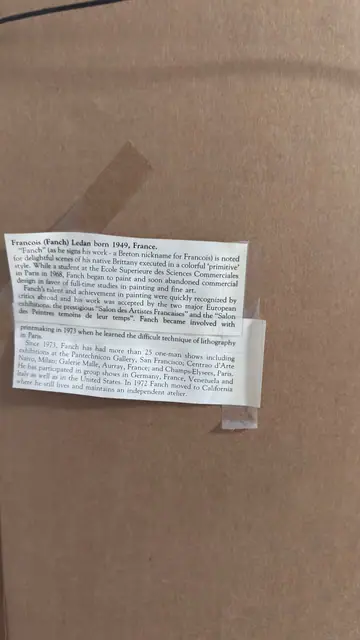

Paintings & Prints
Fanch, Garden Terrace Through Open Windows, Numbered Edition, Framed
Fanch · 1980s-1990s
Price Upon Request






About the Item
Fanch. Tall white multi-pane French windows are thrown open onto a sunlit terrace laid with irregular honey-coloured flagstones. Beyond them a formal garden of clipped lawn, palm trees and a turquoise pool leads to a range of snow-topped mountains under a pink and pale-blue sky. Inside, a wrought-iron table and chairs, a classical bust on a mahogany console and a rose-red dado ground the foreground. Everything is drawn with crisp, even outlines and filled with flat, clean colour in the artist's characteristic naive-precise manner. Pencil signed and numbered in the margin, under glass with a cream mat. Medium: serigraph on paper. Signed lower right margin, in pencil, reading "Fanch". Edition: 143/250. Inscribed on the reverse or mount: Fanch; 143/250; label photographed as IMG_9077, moved here from A123. Condition: Sheet appears clean and unfaded, colours strong. Reflections on the glass in several frames; gilt frame shows light rubbing on the high points.
Details
- Creator:
- Fanch
- Creation Year:
- 1980s-1990s
- Dimensions:
- Height: 38.7 in (98.3 cm)
Width: 40.0 in (101.6 cm)
outside of frame - Medium:
- serigraph on paper
- Edition:
- 143/250
- Period:
- 20Th
- Condition:
- Offered in the condition shown in the photographs.
- Reference Number:
- VO-170
- Documentation:
- no certificate photographed with this lot, but see note on the biography label in A123
- Gallery Location:
- Fanch; 143/250; label photographed as IMG_9077, moved here from A123